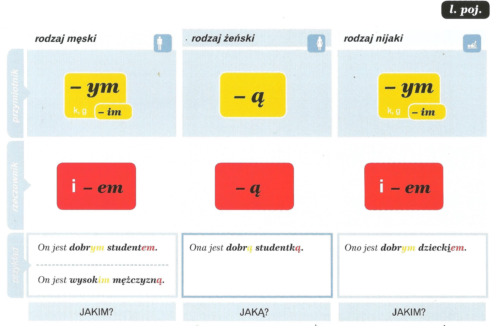
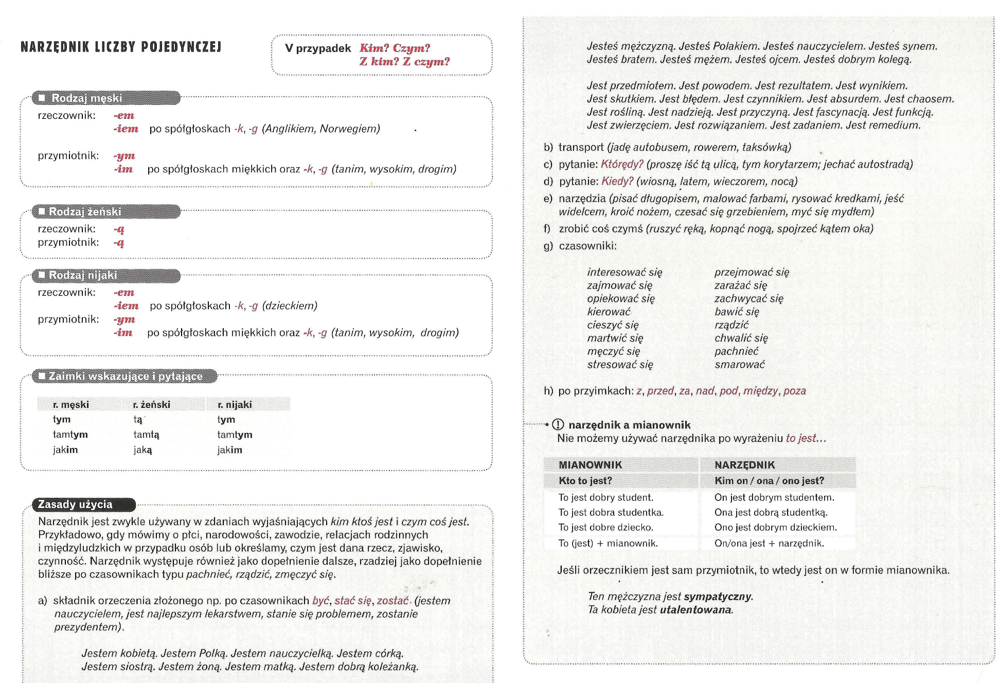
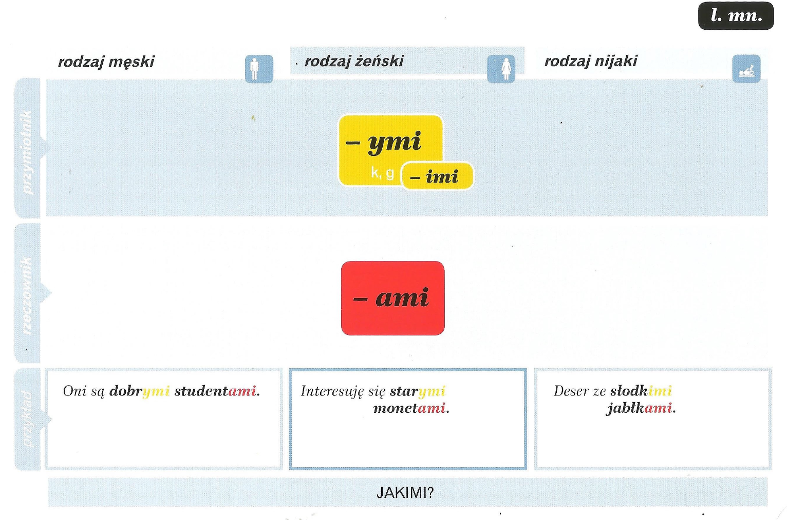
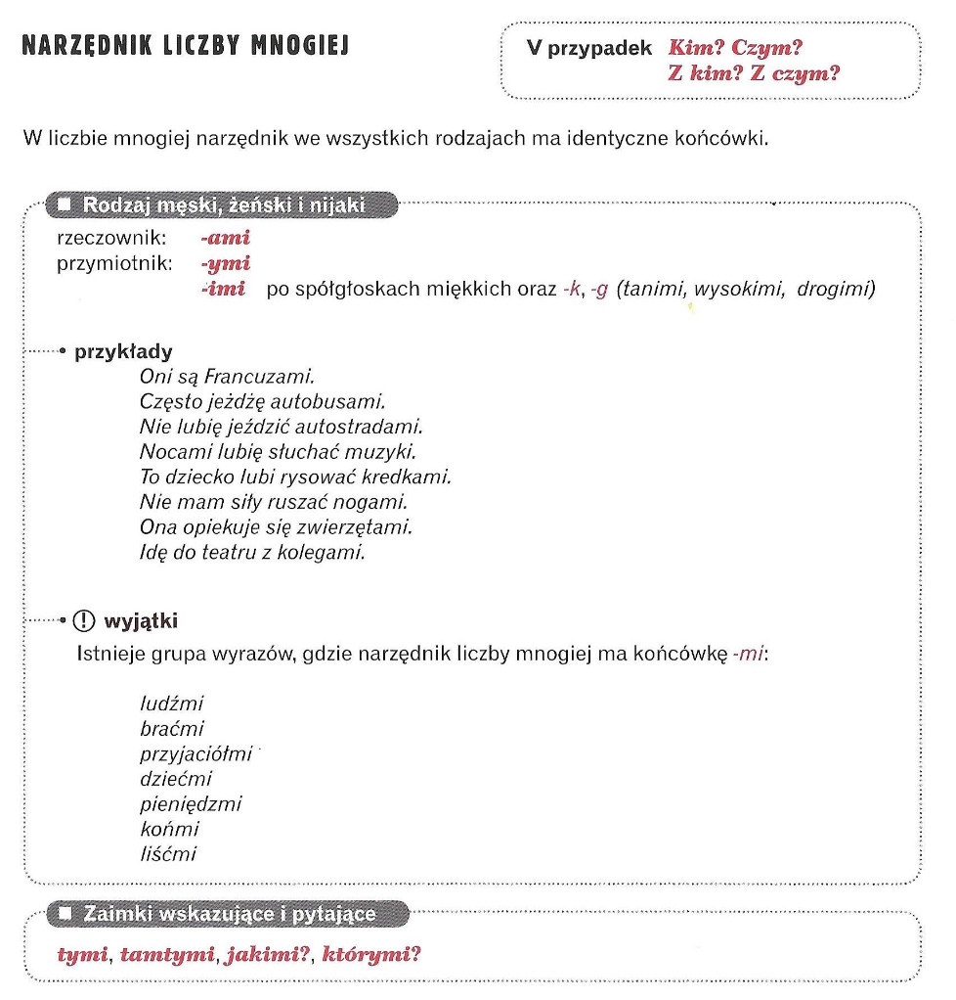

📘 Narzędnik liczby pojedynczej
V przypadek – Kim? Czym? Z kim? Z czym?
NARZĘDNIK LICZBY POJEDYNCZEJ
NARZĘDNIK LICZBY MNOGIEJ
NARZĘDNIK LICZBY POJEDYNCZEJ


🔎 Когда используется Narzędnik?
-
✅ 1. После глаголов-связок:
Используется, чтобы сказать, кем или чем кто-то является.
Примеры:
- Jestem nauczycielem. — Я (являюсь) учителем.
- Ona jest lekarką. — Она (является) врачом.
- On został dyrektorem. — Он стал директором.
🔹 Часто сочетается с глаголами:
- być — быть
- zostać — стать
- stać się — становиться
-
✅ 2. После некоторых глаголов с «ся» (возвратных):
Narzędnik используется после глаголов, которые требуют дополнения «кем/чем», например:
- interesować się — интересоваться
- opiekować się — заботиться
- kierować — управлять
- cieszyć się — радоваться
- zajmować się — заниматься
- martwić się — переживать
- zmęczyć się — устать
- zachwycać się — восхищаться
-
✅ 3. Орудие действия (чем что-то делаешь):
- Piszę długopisem. — Пишу ручкой.
- Kroję nożem. — Режу ножом.
- Myję się mydłem. — Умываюсь мылом.
-
✅ 4. Транспорт и средство передвижения:
- Jadę autobusem. — Еду на автобусе.
- Lecę samolotem. — Лечу на самолёте.
-
✅ 5. После предлогов:
- z (с)
- między (между)
- pod (под)
- nad (над)
- za (за)
- przed (перед)
- poza (вне)
⚠️ Важно:
С выражением "To jest..." (Это есть...) используется именительный падеж, а не творительный:
❌ To jest dobrym studentem.
✅ To jest dobry student.
Но:
✅ On jest dobrym studentem.
📘 Narzędnik liczby mnogiej
V przypadek – Kim? Czym? Z kim? Z czym?

